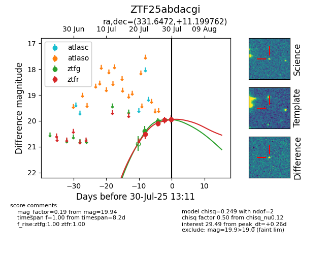

Target ZTF25abdacgi at 2025-07-30 13:11, see:
FINK: fink-portal.org/ZTF25abdacgi
Lasair: lasair-ztf.lsst.ac.uk/objects/ZTF25abdacgi
ALeRCE: alerce.online/object/ZTF25abdacgi
alt names
ZTF25abdacgi (ztf,fink)
coordinates:
equatorial (ra, dec) = (331.6472,+11.19976)
galactic (l, b) = (71.1737,-34.62467)
photometry
last ztfg=20.02, ztfr=19.94
2 ztfg, 4 ztfr detections
